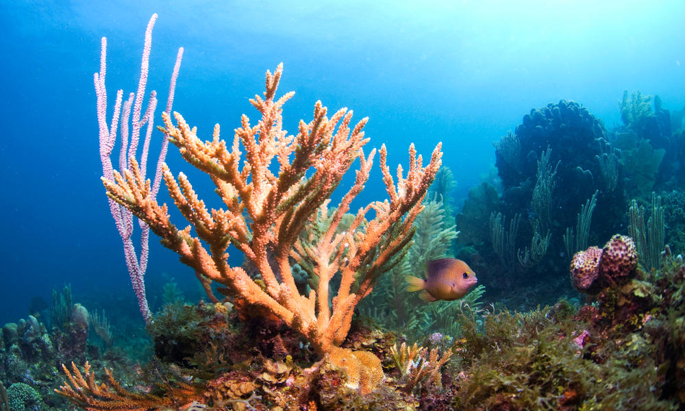
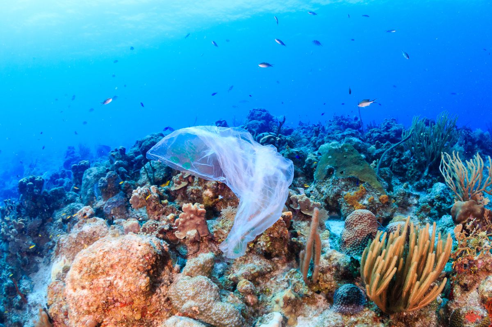
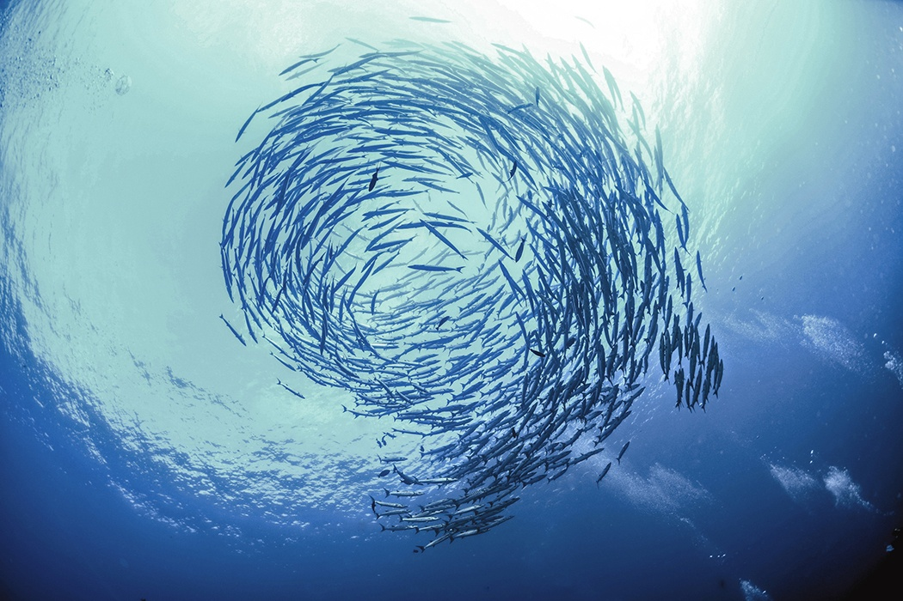

This goal aims to "Conserve and sustainably use the oceans, seas and marine resources" (Life Below Water Link)This goal addresses life below water and our oceans and how their health and wellbeing help society today. If the oceans are unhealthy or we are polluting them, they could become polluted and the life below water like fish, coral and other organisms could die and our ecosystem could become drastically less diverse. If the fish in the ocean were to die or become less healthy then we would lose a source of food and with the climate change further affecting our supply of food and society may experience a shortage of food and that may put society at great risk. "Our rainwater, drinking water, weather, climate, coastlines, much of our food, and even the oxygen in the air we breathe, are all ultimately provided and regulated by the sea." (Life Below Water Link) There is a continuous pollution of the ocean and the effects caused by the pollution are having an adverse effect on the earth's ecosystems and biodiversity. The pollution also disturbs the large fishing industry and the food we eat. Oceans are also used for transportation and trade. If we manage this resource carefully, it can lead to a greater chance of a sustainable future. We must manage the protected marine areas and put in more regulations to reduce overfishing, pollution and ocean acidification. The targets for this goal as shown on its UN Sustainable Development Goals Website (Life Below Water Link) are: By 2025, prevent and reduce marine pollution of all kinds, in particular from land activities, including marine debris and nutrient pollution. By 2020, sustainable manage and protect marine and coastal ecosystems to avoid significant adverse impacts for their restoration in order to achieve healthy oceans. By 2020: regulate harvesting and end overfishing, illegal, unreported and unregulated fishing techniques, destructive fishing practices. By 2030, increase he economic benefits to Small Island developing states and least developed countries from the sustainable use of marine resources, including through sustainable management of fisheries, aquaculture and tourism. Increase knowledge, develop research capacity and transfer marine technology taking into account the Intergovernmental Oceanographic Commission Criteria and Guidelines on the Transfer of Marine Technology, in order to improve ocean health and enhance the contribution of the marine biodiversity to the development of developing countries.




what percent of the world uses only BASIC water sanitation services?
In the world during 2015, 68% of the global population use at least basic sanitation services. Compared to in 2005, 62% of the world use at least basic sanitation services. The use of basic sanitation services is important but could be improved because a population that is not using basic sanitation services could develop illness or could be dumping waste into the water and polluting the oceans.
what percent of the world uses only SAFELY MANAGED water sanitation services?
In the world during 2015, 39% of the global population use safely managed sanitation services. Compared to in 2005 when only 31% of the world is using safely managed sanitation services. This use of safely managed sanitation services is important and good for the environment though it may pollute the water because of the chemical runoff for sanitation services but the chemical runoff is significantly less in safely managed sanitation services than in basic sanitation services because safely managed sanitation may produce less chemical runoff than basically managed services